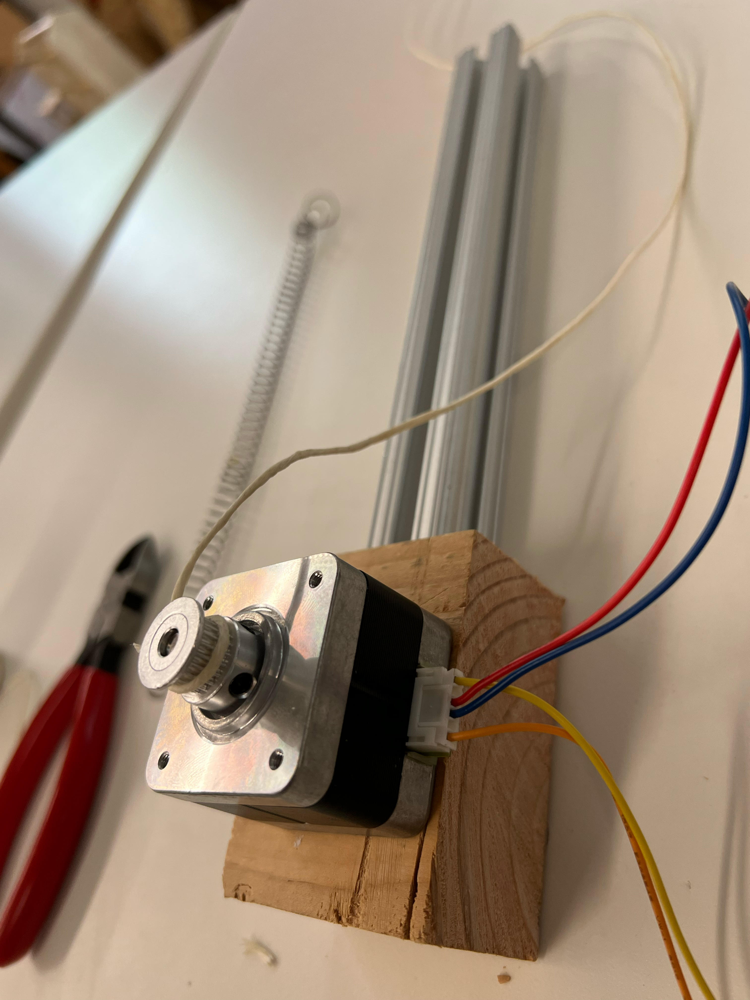

This week we're building a machine with a stepper motor. We'll need to be able to calibrate it such that it can start up in the same position when powered on.
First, we wire up the stepper motor and controller to the arduino. This is the reference board:
https://www.pololu.com/product/2876
The wiring:
We attach the stepper motor to a wooden base with hot glue, and tie string to the drive.

A spring and a length of metal. The spring is initially attached by tying it to the metal.

Next we drill into the wooden base to attach it to the metal.

As we can see, when the string is pulled, the spring retracts.


With additional wood planks on the sides, this will keep the spring retracting relatively linearly and keep a marble in position.


Next, we'll code up an Arduino program. We'll add two buttons to the breadboard and set one to release the motor in order to reset the calibration, via the disableOutputs() class:
The other button will engage the motor and pull in the spring to set the launcher.
#include
const int stepPin = 13; // blue
const int dirPin = 12; // orange
const int buttonPin = 2; // the number of the pushbutton pin
const int buttonPin2 = 3;
int buttonState = 0;
int buttonState2 = 0; // variable for reading the pushbutton status
// Define a stepper and the pins it will use
AccelStepper stepper(1, stepPin, dirPin); // initialise accelstepper for a two wire board
void setup()
{
pinMode(buttonPin, INPUT);
pinMode(buttonPin2, INPUT);
}
void loop()
{
buttonState = digitalRead(buttonPin);
if (buttonState == HIGH) {
stepper.disableOutputs();
}
if (buttonState2 == HIGH)
{
stepper.moveTo(50000);
stepper.setMaxSpeed(1000);
stepper.setAcceleration(1000);
}
stepper.run();
}
https://www.youtube.com/watch?v=bpQ7m73jhEY